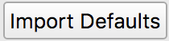

Porymap Settings¶
Porymap uses config files to read and store user and project settings.
Global settings¶
A global settings file is stored in a platform-dependent location for app configuration files
(%Appdata%\pret\porymap\porymap.cfg on Windows, ~/Library/Application\ Support/pret/porymap/porymap.cfg on macOS).
A selection of the settings in this file can be edited under Preferences..., and the rest are updated automatically while using Porymap.
Project settings¶
A config file for project-specific settings is also created when opening a project in porymap for the first time. It is stored in your project root as porymap.project.cfg. You may want to force commit this file so that other users will automatically have access to your project settings.
A second config file is created for user-specific settings. It is stored in your project root as porymap.user.cfg. You should add this file to your gitignore.
The settings in porymap.project.cfg and porymap.user.cfg can be edited under Options -> Project Settings.... Any changes made in this window will not take effect unless confirmed by selecting OK and then reloading the project.
General¶
- Use Poryscript
If this is checked, a
scripts.pory(andtext.pory, if applicable) file will be created alongside new maps, instead of ascripts.incfile. Additionally,.poryfiles will be considered when searching for scripts labels and when opening scripts files (in addition to the regular.incfiles).Defaults to
unchecked.- Show Wild Encounter Tables
If this is checked, the
Wild Pokemontab will be enabled and wild encounter data will be read from the project’s encounters JSON file.Defaults to
checked. If no encounters JSON file is found this will be automatically unchecked.- Prefabs
Prefabs Pathis the file path to a.jsonfile that contains definitions of prefabs. This will be used to populate thePrefabspanel on theMaptab. If no path is specified prefabs will be saved to a newprefabs.jsonfile in the root project folder. A new file can be selected with the button or by editing the file path.
button or by editing the file path.The  button will populate the specified file with version-specific prefabs constructed using the vanilla tilesets. This will overwrite any existing prefabs.
- Collision Graphics
Image Pathis a path to any image file you’d like to use to represent collision and elevation values on theCollisiontab. A new file can be selected with the button or by editing the file path. The image will be evenly divided into segments, with each row representing an elevation value (starting with 0at the top) and each column representing a collision value (starting with0on the left).Your image does not need to have a row/column for every valid elevation/collision value (for instance, the default collision values range from
0-3, but because2-3are semantically the same as1they are not displayed). You can specify the highest elevation and collision value represented on your image withMax ElevationandMax Collision.Note: Images with transparency may not function correctly when displayed on the map.
The filepath defaults empty, which will use Porymap’s original image.
Max ElevationandMax Collisiondefault to15and1respectively.- Pokémon Icons
Porymap can display Pokémon species icons that it reads from your project on the
Wild Pokemontab. If Porymap fails to load your icon image, or if you’d like to display your own icon in Porymap for any reason, you can select a new image with the button or by editing the file path. You can select a species with the dropdown to edit the path for a different icon.If your custom icon or the default icon fails to load a
 icon will be displayed.
icon will be displayed.Defaults to empty (the path in your project where Porymap expects to find each icon).
- Base Game Version
This is the name of the base pret repository for this project. Changing this setting will prompt you to restore the default project settings for any of the three versions. You can also do this for the currently-selected base game version by selecting
 at the bottom of the window. Aside from determining the default settings in this window, the base game version also determines the default settings when initializing the region map and when importing default prefabs.
at the bottom of the window. Aside from determining the default settings in this window, the base game version also determines the default settings when initializing the region map and when importing default prefabs.Defaults to
pokeruby,pokefirered, orpokeemeralddepending on the project folder name. If the folder name doesn’t match you will be prompted to select a version on first launch.
{kind=link}
{kind=link}
Maps¶

- Map Data Defaults
- Border Metatiles
This is list of metatile ID values that will be used to fill the border on new maps. The spin boxes correspond to the top-left, top-right, bottom-left, and bottom-right border metatiles respectively.
If
Enable Custom Border Sizeis checked, this will instead be a comma-separated list of metatile ID values that will be used to fill the border on new maps. Values in the list will be read sequentially to fill the new border left-to-right top-to-bottom. If the number of metatiles in the border for a new map is not the same as the number of values in the list then the border will be filled with metatile ID0x000instead.Defaults to
0x014,0x015,0x01C,0x01Dforpokefirered, and0x1D4,0x1D5,0x1DC,0x1DDfor other versions.- Metatile ID
This is the metatile ID value that will be used to fill new maps.
Defaults to
0x1.- Collision
This is the collision value that will be used to fill new maps. It will also be used to set the default selection on the Collision tab when the project is first opened.
Defaults to
0.- Elevation
This is the elevation value that will be used to fill new maps. It will also be used to set the default selection on the Collision tab when the project is first opened.
Defaults to
3.- Create separate text file
If this is checked, a
text.inc(ortext.pory) file will be created alongside new maps.Defaults to
uncheckedforpokeemeraldandcheckedfor other versions.
- Map Data Layout
Each of these three settings are bit masks that will be used to read and write an attribute of the data that makes up each map space (metatile ID, collision, and elevation). A warning will be displayed if any of the masks overlap. Their values may be read from
#defines in your project, in which case editing will be disabled and you can change their values by modifying them in your project.Default to being read from
MAPGRID_METATILE_ID_MASK,MAPGRID_COLLISION_MASK, andMAPGRID_ELEVATION_MASK. If they can’t be read, they default to0x3FF,0xC00, and0xF000respectively.- Enable ‘Floor Number’
If this is checked, a
Floor Numberoption will become available on theHeadertab and on the new map prompt. For more information see Editing Map Headers.Defaults to
checkedforpokefireredanduncheckedfor other versions.- Enable ‘Allow Running/Biking/Escaping’
If this is checked,
Allow Running,Allow Biking, andAllow Dig & Escape Ropeoptions will become available on theHeadertab and on the new map prompt. For more information see Editing Map Headers.Defaults to
uncheckedforpokerubyandcheckedfor other versions.- Enable Custom Border Size
If this is checked,
Border WidthandBorder Heightoptions will become available under theChange Dimensionsbutton and on the new map prompt. If it is unchecked all maps will use the default 2x2 dimensions.Defaults to
checkedforpokefireredanduncheckedfor other versions.
Tilesets¶

- Default Primary/Secondary Tilesest
These will be the initially-selected tilesets when creating a new map, and will be used if a layout’s tileset fails to load. If a default tileset is not found then the first tileset in the respective list will be used instead.
The default primary tileset is
gTileset_General.The default secondary tileset is
gTileset_PalletTownforpokefirered, andgTileset_Petalburgfor other versions.- Enable Triple Layer Metatiles
Metatile data normally consists of 2 layers with 4 tiles each. If this is checked, they should instead consist of 3 layers with 4 tiles each. Additionally, the
Layer Typeoption in theTileset Editorwill be removed. Note that layer type data will still be read and written according to yourLayer Type masksetting.For details on supporting this setting in your project, see https://github.com/pret/pokeemerald/wiki/Triple-layer-metatiles.
Defaults to
unchecked- Attributes size
The number of bytes used per metatile for metatile attributes. The data in each of your project’s
metatile_attributes.binfiles will be expected to bes * n, wheresis this size andnis the number of metatiles in the tileset. Additionally, newmetatile_attributes.binwill be included in the project with a correspondingINCBIN_U8,INCBIN_U16, orINCBIN_U32directive.Changing this setting will automatically enforce the new limit on the metatile attribute mask settings.
Defaults to
4forpokefireredand2for other versions.- Attribute masks
Each of these four settings are bit masks that will be used to read and write a specific metatile attribute from the metatile attributes data. If you are instead importing metatile attribute data from AdvanceMap, a default mask value will be used to read the data, and the mask value specified here will be used to write the new file.
If any of the mask values are set to
0x0, the corresponding option in the Tileset Editor will be removed. The maximum for all the attribute masks is determined by the Attributes size setting. A warning will be displayed if any of the masks overlap.- Metatile Behavior mask
This is the mask value for the
Metatile Behaviormetatile attribute.Defaults to being read from
sMetatileAttrMasksorMETATILE_ATTR_BEHAVIOR_MASK. If these can’t be read, defaults to0x1FFforpokefirered, and0xFFfor other versions.
- Layer Type mask
This is the mask value for the
Layer Typemetatile attribute. If the value is set to0x0theLayer Typeoption will be disabled in the Tileset Editor, and all metatiles will be treated in the editor as if they had theNormallayer type.Defaults to being read from
sMetatileAttrMasksorMETATILE_ATTR_LAYER_MASK. If these can’t be read, defaults to0x60000000forpokefirered, and0xF000for other versions.
- Encounter Type mask
This is the mask value for the
Encounter Typemetatile attribute.Defaults to being read from
sMetatileAttrMasks. If this can’t be read, defaults to0x7000000forpokefirered, and0x0for other versions.
- Terrain Type mask
This is the mask value for the
Terrain Typemetatile attribute.Defaults to being read from
sMetatileAttrMasks. If this can’t be read, defaults to0x3E00forpokefirered, and0x0for other versions.
- Output ‘callback’ and ‘isCompressed’ fields
If these are checked, then
callbackandisCompressedfields will be output in the C data for new tilesets. Their default values will beNULLandTRUE, respectively.Defaults to
checkedfor both.
Events¶

- Default Icons
Each event group is represented by a unique icon on the
Eventstab of the main editor. Here you can provide filepaths to your own image files to replace these icons, either by selecting the button or by editing the file path directly.Events in the
Objectsgroup will only use this icon if there are no graphics associated with theirSpritefield.The filepaths default to empty, which will use Porymap’s original icons.
- Warp Behaviors
By default, Warp Events only function as exits if they’re positioned on a metatile whose Metatile Behavior is treated specially in your project’s code. If any Warp Events are positioned on a metatile that doesn’t have one of these behaviors they will display a warning. Here you can disable that warning, or edit the list of behavior names that will silence the warning.
Defaults to
unchecked, i.e. the warning is enabled. The list of behaviors is initially populated with all the vanilla warp behavior names across pokeemerald, pokefirered, and pokeruby.- Enable Clone Objects
If this is checked Clone Object Events will be available on the
Eventstab. For more information see Clone Object Events.Defaults to
checkedforpokefireredanduncheckedfor other versions.- Enable Secret Bases
If this is checked Secret Base Events will be available on the
Eventstab. For more information see Secret Base Events.Defaults to
uncheckedforpokefireredandcheckedfor other versions.- Enable Weather Triggers
If this is checked Weather Trigger Events will be available on the
Eventstab. For more information see Weather Trigger Events.Defaults to
uncheckedforpokefireredandcheckedfor other versions.- Enable ‘Quantity’ for Hidden Items
If this is checked the
Quantityproperty will be available for Hidden Item Events. For more information see Hidden Item Events.Defaults to
checkedforpokefireredanduncheckedfor other versions.- Enable ‘Requires Itemfinder’ for Hidden Items
If this is checked the
Requires Itemfinderproperty will be available for Hidden Item Events. For more information see Hidden Item Events.Defaults to
checkedforpokefireredanduncheckedfor other versions.- Enable ‘Repsawn Map/NPC’ for Heal Locations
If this is checked the
Respawn MapandRespawn NPCproperties will be available for Heal Location events. For more information see Heal Locations.Defaults to
checkedforpokefireredanduncheckedfor other versions.
{kind=link}
Files & Identifiers¶


These two tabs provide a way to override the filepaths and symbol/macro names Porymap expects to find in your project.
For Files, each can be overridden by typing a new path or selecting a file/folder with the button. Paths are expected to be relative to the root project folder. If no path is specified, or if the file/folder specified does not exist, then the default path will be used instead.
For Identifiers, each can be overridden by typing a new name in the line edit. Overrides with regex in the name support the regular expression syntax used by Qt.
For more information on what each of these overrides does, see Project Files.